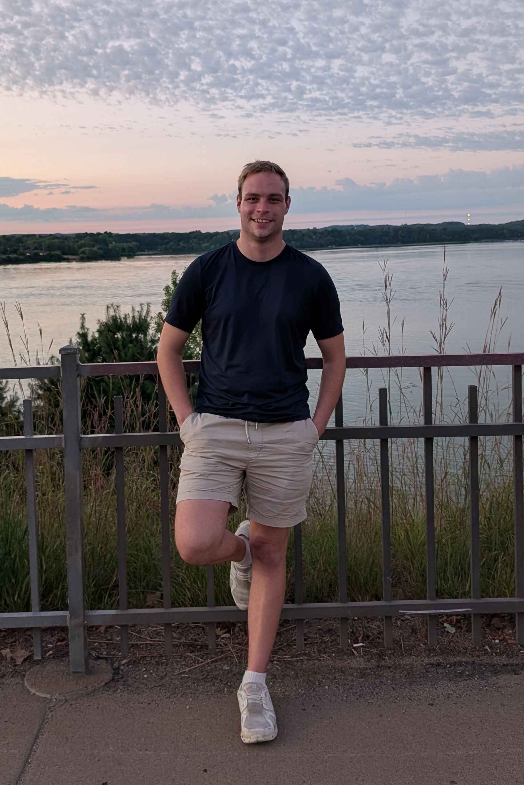

Community Support Intern (CEDA)
Community and Economic Development Associates
Duration: Jun 2026 – Present
Location: Eau Claire, WI (Remote)
Research Assistant
University of Wisconsin-Eau Claire
Duration: Jun 2026 – Present
Location: Eau Claire-Menomonie Area
Developing a cycling wayfinding application tailored for the Eau Claire, WI metropolitan area, aimed at enhancing local tourism and promoting active recreation through improved navigation.
Target Fulfillment Associate (Part-time)
Duration: Dec 2024 – Present
Processing and preparing hundreds of online orders daily, ensuring high standards of speed, accuracy, and customer service.
Seasonal Fulfillment Associate
Duration: Dec 2024 – Mar 2025
Apparel Sales Associate
Scheels
Duration: Feb 2024 – Dec 2024
Location: Eau Claire, WI
Provided personalized customer service, maintained product knowledge of apparel brands, and collaborated with team members to meet sales goals.
Walmart Personal Shopper
Duration: Sep 2023 – Feb 2024
Location: Lake Hallie, WI
Money Services
Duration: Dec 2022 – Nov 2023
Location: Wausau-Stevens Point Area